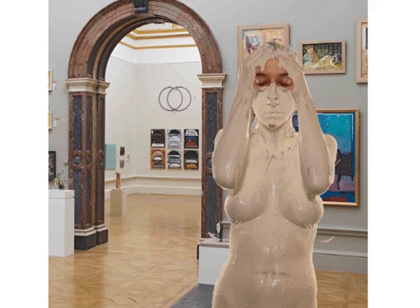

<!DOCTYPE html>
<html >
  <head>
    <meta charset="UTF-8">
    <link rel="stylesheet" type="text/css" href="css/style.css" />
    <meta name="viewport" content="width=device-width, initial-scale=1, maximum-scale=1, user-scalable=no">
    <meta name="description" content="Maëlle Carlier, art project, body tranformation">
    <script src="http://ajax.googleapis.com/ajax/libs/jquery/1.7.1/jquery.min.js" type="text/javascript"></script>
    <script type="text/javascript" src="js/index.js"></script>
    <link rel="icon" type="image/icon" href="img/favicon.ico" />
    <!--[if IE]><link rel="shortcut icon" type="image/x-icon" href="img/favicon.ico" /><![endif]-->
    <title>Maëlle Carlier | Disparition</title>
  </head>
  <body>
    <div class="projects-header">
      <a href="index.html" class="fadelink">
        <h1>Maëlle Carlier</h1>
        <h2>
          digital engineer student
          and media  art  enthusiast
        </h2>
      </a>
    </div>
    <h1 class="projects-name">Disparition</h1>
    <div id="square" class="projects-square"></div>

    <div class="disparition-text">
      <p>
      Influenced by  the  work of  Peter  Campus  in  «Three  Transitions»,
      Disparition is a performance combining art and digital  treatment.
      By exposing a body in a  piece of art it’s a way to  define  and claim
      an identity. Nevertheless exposing something is also way to &nbspunpossessed &nbspit. Look at an &nbsp <a href="https://vimeo.com/146042842" target="_blank">extract</a>.</p>
    </p>
    </div>

    <div class="disparition-img">
      
    </div>

  </body>
  <footer class="footer-projects-scroll">
      <a class="footer-left fadelink" href="peur.html">Previous</a>
      <a class="footer-middle-scroll fadelink"href="projects.html">Projects</a>
      <a class="footer-right fadelink" href="apparition.html">Next</a>
  </footer>
</html>
